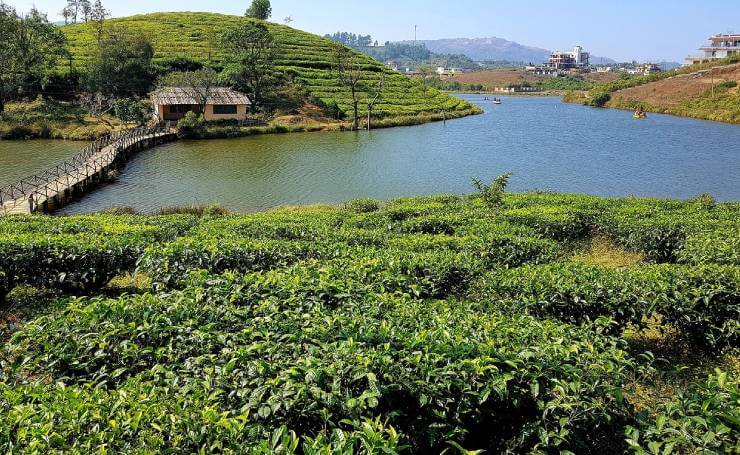

Top Destinations
Alappuzha – Delightful Venice of the East
No doubt one can have ‘memories or fun longer than the road that stretches out ahead’ in Alappuzha. Alappuzha is
one of the most popular tourist attractions in Kerala.
Close down the sounds of all the cities and you will hear melodious chirping of rare avian species, coming from
places like Siberia in Kumarakom Bird Sanctuary. It is a paradise of bird watchers as various species of birds like
Little Cormorant, Indian Darter, White Ibis, Kingfishers and many more. Boating to watch the migratory birds is
one of the top things to do in Alappuzha.
Bekal – Offbeat Gem of Kerala

Bekal is a place where your soul will open out her raven’s wings to fly. Your emotions will flow in tune with the
calmness of pristine waterfalls. Crystal clear backwaters blow your heart away. 300 year old historical charm of
Bekal fort is still intact.
Idukki – Forest Paradise

Idukki is the crown of Kerala tourism. The charm of Idukki never ceases to attract the tourists. Half of Idukki is
covered by forests. It is the perfect place to enjoy with family and friends away from the chaos of cities. Lush
greenery, cascading waterfalls, lagoons, cliffs, serene rivers are the crowning glory of this spice garden of Kerala.
Wayanad – Sooth your eyes in the serenity of Wayanad

Located on the border of Tamil Nadu and Karnataka, Wayanad is a part of a forest reserve rich in wildlife and spice
plantations.
Munnar – Blissful Heaven of Kerala
Munnar is the crown of gorgeous Western Ghats. Emerald green landscapes, plantations, scenic sights and pristine
waterfalls are the ‘thing of beauty joy forever’. It is one of the most popular destinations in Kerala. Munnar also houses
the beautiful Neelkurinji flowers which bloom in every 12 years. Picturesque and enchanted valley of Munnar never
ceases to attract tourist. It is cradled with rich flora and fauna.
Vagamon – Ode to the Grassy Hills

Let’s go to a place full of refreshing vibes, stunning grassy hills, cascading waterfalls, rose gardens, delightful tea
estates, pine forests and awesome Spice plantations.Vagamon is a treasure trove of delightful vistas for nature lovers
and honeymoon couples.
About Kerala

Kerala, often referred to as "God's Own Country," is a picturesque state located on the southwestern coast of India. Known for its stunning natural beauty, Kerala boasts a diverse landscape that includes serene backwaters, lush green hill stations, pristine beaches, and dense forests. The state's unique geographical features have made it a sought-after destination for travelers seeking tranquility and adventure.
Kerala's rich cultural heritage is evident in its traditional art forms like Kathakali, Mohiniyattam, and Theyyam, as well as its vibrant festivals such as Onam and Vishu. The state is also famous for its Ayurvedic treatments, which attract wellness seekers from around the world.
The cuisine of Kerala is a delightful experience, characterized by an abundance of coconut, spices, and fresh seafood, with dishes like appam, puttu, and Kerala-style fish curry being local favorites. The people of Kerala, known for their hospitality and high literacy rates, contribute to the state's welcoming and enlightened atmosphere.
With its blend of natural beauty, cultural richness, and culinary delights, Kerala offers a unique and enchanting experience to all who visit.